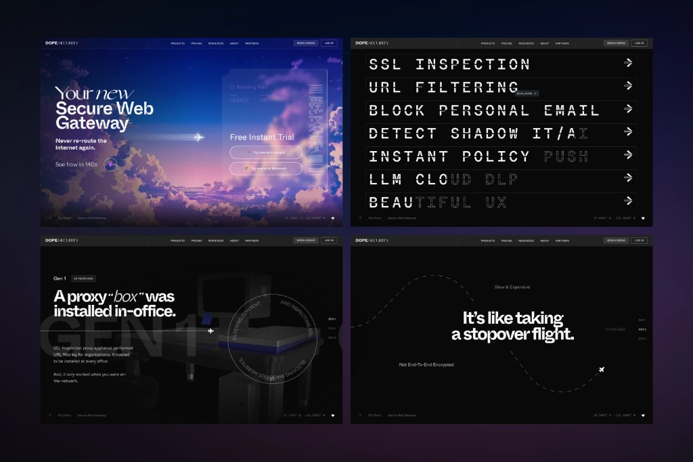

design & Direction
Different by Design
dope.security wasn’t built to look or work like another legacy security company, so its website couldn’t either. I designed the brand site to stand apart from the industry: a clear founding story, an editorial sensibility, and enough personality to make a secure web gateway worth a second look.
The Work
From concept to deployment.
The goal was to make a technical product understandable and appealing on a B2C level, in a sea of B2B sameness.
Starting with the brand’s central theme of “Fly Direct” as its organizing metaphor for unfamiliar security architecture, expressive typography and deliberate pacing gave the story room to land, while specific product language kept it grounded in what the technology actually did.
I owned the website design, directed and managed frontend developers, and developed parts of the site myself. Working across design and implementation let me stay close to the details—not just what we handed over, but what actually shipped.
